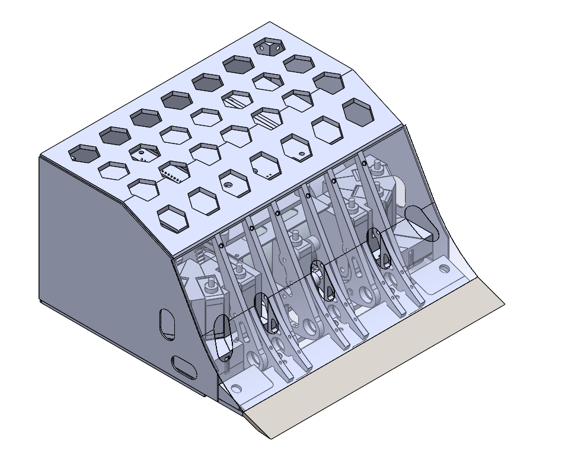

Janusz Chmaruk
Kontakt
- chmarukjanusz@gmail.com
- +48 880 741 788
Języki
- Angielski: B2, TOEIC test: link
Edukacja
Technik mechatronik
Ukończono Zespół Szkół Mechanicznych i Ogólnokształcących nr 5 w Łomży z tytułem: Technik mechatronik
Kwalifikacje zawodowe:
- E3 Montaż urządzeń i systemów mechatronicznych
- E18 Eksploatacja urządzeń i systemów mechatronicznych
- E19 Projektowanie i programowanie urządzeń i systemów mechatronicznych,
2015-2019
Studia - Automatyka i Robotyka
Politechnika Białostocka:
- I stopień (ukończony), specjalizacja: automatyzacja i informatyzacja procesów
- II stopień (ostatni semestr), specjalizacja: automatyka przemysłowa
2019-2024
Koło SumoMasters
Aktywny członek koła naukowego na Politechnice Białostockiej (zawody robotów w Kolumbi, Brazyli, Litwie, Rumuni):
- strona koła naukowego: wm.pb.edu.pl/studenci/kola-naukowe/projekty-studenckie/sumomasters
2022-2024
Wykonane przeze mnie roboty
Część mechaniczna robotów (zaprojektowanie, wykonanie części na frezarce CNC i złożenie) została wykonana przeze mnie. Elektronika została wykonana przez Norberta Waśkiewicza.


Umiejętności / Uprawnienia
Uprawnienia SEP
Spełniam wymagania kwalifikacyjne do wykonywania pracy na stanowisku EKSPLOATACJI w zakresie obsługi, konserwacji, remontu lub naprawy, montażu lub demontażu dla następujących urządzeń, instalacji i sieci:
- urządzenia prądotwórcze przyłączone do sieci przesyłowej lub dystrybucyjnej energii elektrycznej bez względu na wysokość napięcia znamionowego;
- urządzenia, instalacje i sieci elektroenergetyczne o napięciu znamionowym nie wyższym niż 1kV;
- elektryczne urządzenia w wykonaniu przeciwwybuchowym;
- aparatura kontrolno-pomiarowa oraz urządzenia i instalacje automatycznej regulacji, sterowania i zabezpieczeń urządzeń i instalacji wymienionych w pkt 1,2,11
Ważne do 17.04.2029
Uprawnienia na wózek widłowy UDT
Zakres uprawnienia: Wózki jezdniowe podnośnikowe z mechanicznym napędem podnoszenia z wyłączeniem wózków z wysięgnikiem oraz wózków z osobą obsługującą podnoszoną wraz z ładunkiem
Ważne do 21.12.2033
Umiejętność obsługi frezarki
KIMLA CNC 3-osiowa (starszy model)
2022-2024, Koło SumoMasters
Doświadczenie
Praktyki zawodowe we Włoszech (ERASMUS)
EUROCONIC s.r.l.
Via Diesel - Nucleo industriale
02.09.2017 - 28.09.2017
Praktyki zawodowe w OSM Piątnica
Praca przy “tackarkach”
08.08.2022 - 26.08.2022
Praca wakacyjna w OSM Piątnica
- Praca przy “tackarkach”, Bosch i innych jako pomocnik mleczarski
- Pomoc przy dziale utrzymania ruchu, obsługa systemu MWS
07.2023-09.2023
Aktualne orzeczenie Sanepid
Aktualne orzeczenie lekarskie do celów sanitarno-epidemiologicznych
bezterminowe
Klauzula poufności
Wyrażam zgodę na przetwarzanie moich danych osobowych dla potrzeb niezbędnych do realizacji procesu rekrutacji zgodnie z Rozporządzeniem Parlamentu Europejskiego i Rady (UE) 2016/679 z dnia 27 kwietnia 2016 r. w sprawie ochrony osób fizycznych w związku z przetwarzaniem danych osobowych i w sprawie swobodnego przepływu takich danych oraz uchylenia dyrektywy 95/46/WE (RODO).